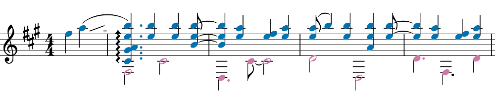
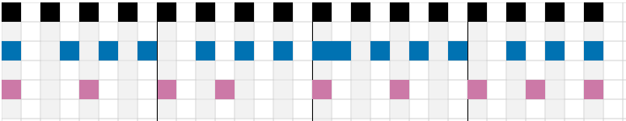
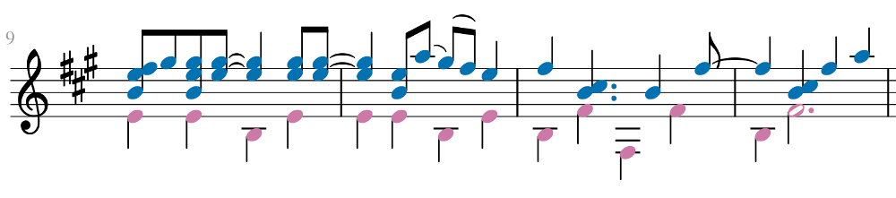
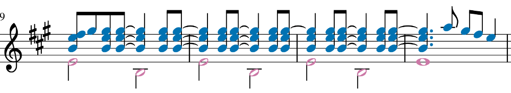
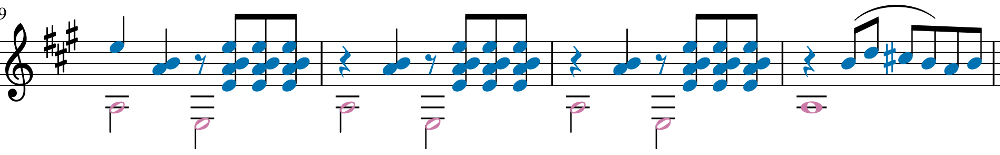

Composition Tricks in Tommy Emmanuel's Lewis & Clark
Lewis & Clark is one of my favourite Tommy Emmanuel compositions, when I first learnt it years ago I merely learnt the mechanics of how to play it, without really thinking any deeper. Here's a few tricks I've spotted in my attempt to rectify that and try to understand what's happening musically rather than just the act of repeating the song.
- Lewis & Clark, a song by Tommy Emmanuel on Spotify
- Tommy Emmanuel c.p.g - The Mystery - Lewis & Clark - YouTube
The song is divided into three sections, the intro, an A section and a B section. Tommy wrote this song after reading the "Journals of Lewis and Clark". Not really knowing much about Lewis and Clark myself, I'm going to simplify and handwavingly say that the three sections represent:
- Intro: Setup and preparation for a long voyage.
- A section: Travelling on the voyage. Imagine a wagon trundling along or a long and quiet car/train journey.
- B section: Some unexpected peril or uncertainty whilst traveling
Polyrhythm swapping between the melody and bass line
The B section can be divided into three, the first representing the most uncertainty. Leading into this, Tommy's just played a Bsus2 chord pattern leaving us with the sense that something big is about to happen.
The first bar (excluding the first two pick up notes) has the bass line on the beat, the notes occur on the 1 and 3 of the bar. The melody is off the beat, the first note takes one and half beats, so the notes occur on the 1, 2.5, 3.5 and 4.5 beat of the bar
In the second bar these roles swap, the bass line is now off the beat, the notes occur on the 1 and 2.5 of the bar. The melody is on the beat, the notes occur on the 1, 2, 3 and 4 beat of the bar.
This rhythm swapping is repeated again for the next two bars except for based around a different chord. I've recorded me playing the bass line and melody separately with a click track so it's easier to hear.
To me, this off beat rhythm swapping between melody and bass gives a sense of uneasy footing and is in contrast to the whole of the A section where the bass line is a steady and on the beat throughout.
This gives the "unexpected peril or uncertainty" feel that I mentioned at the beginning, it also makes it more difficult (for me at least) to play. If you're a non guitarist and want to give this a try, perhaps a exercise would be a 3:2 polyrhythm exercise swapping to 2:3 every other bar. Polyrhythms: 2 against 3 and 3 against 2 - YouTube.
It's also easier to see if we represent the rhythm as a grid, each square representing a half beat. The black is the 4/4 beat, the middle line the melody and the bottom line the bass.
This leads us into the second part of the B section. Where Tommy employs another simple but powerful trick.
Building expectation and tension using extended repetition
The first bar is a classic sounding country style Travis picking pattern, it's so familiar, that to it gives a sense of safety after the uncertainty of the previous pattern, as if you've just regained your footing after stumbling.
The second bar continues this Travis picking, except we throw in a descending A-G#-F#-E-F# lick that's been used throughout the A section.
The third and fourth bar is our transition back using the Bsus2 chord to build tension into the first pattern using the polyrhythm swapping.
So we have two four bar patterns, Tommy repeats the first pattern again, setting you up to think that we'll repeat pattern two again:
- pattern 1 - four bars
- pattern 2 - four bars
- pattern 1 - four bars
- pattern 2 - first bar of pattern 2
Instead of finishing the last three bars of pattern two, Tommy plays an extended variation that he holds on to for two more bars than you were expecting, before following it up with the same A-G#-F#-E-F# lick.
This time, he leaves out the second beat before playing the lick. This space gives the lick more impact when delivering it a second time.
This is followed by the Bsus2 pattern, which is also lasts for two more bars than the previous iteration. Again we see a gap before a lick that leads back into the A section.
This four bar, four bar, four bar... Sets us up for the repeated six bar extended repetition. Since this extended repetition is on the Travis picking country sounding pattern, we compound the repeat with a really familiar sounding picking pattern.
Holding it for another two bars gives us a "familiar, yet different" feel and we expect something to happen, leaving a space on the second beat amps up the tension for the descending lick to send us back into the A section. It's a small but cool change that uses familiarity and repetition to add an extra "longing" or "yearning" feeling.
Achieving variety by leaving out the bass line
In the previous example, you'll also notice that on the second play through of the descending lick, Tommy leaves out the bass line. This also occurs in the last eight bars of the A section, these eight bars serve as a transition from "steady safe journey" to "unexpected peril".
Tommy leaves out the bass line on the second repetition in the last bar before going into section B. Since we've had a constant stable bass line throughout the A section, the ear picks up on this and gives us a nice sense of variety by playing less! A similar effect is achieved in the last repetition of the B section before going into the outro. Sometimes less is more.
This reminds me of a similar trick that Clive Carroll once spoke about at the London Guitar show, self-deprecatingly saying that he wasn't very imaginative so he just shifted the melody an octave. He also mentions the same thing in Clive Carroll Songwriting Masterclass – ‘Eliza’s Eyes’ Part 2 - YouTube.
In conclusion?
There's a lot more to be looked at in Lewis & Clark, if you watch the whole of the Clive Carroll songwriting master class, he mentions that after shifting the melody an octave, it leaves space for a counter melody. So it seems that applying a trick might give you an idea or opportunity to try out another (Clive mentioned at LGS that Eliza's Eyes took him about a day or so to compose! I guess it's easy for some).
I'm not suggesting that Tommy Emmanuel composed this by thinking "This is a perfect time to try polyrhythm swapping", it sounds more intuitive and listening him talk about it in his live and tutorial videos, he aims to achieve a certain feel or groove instead.